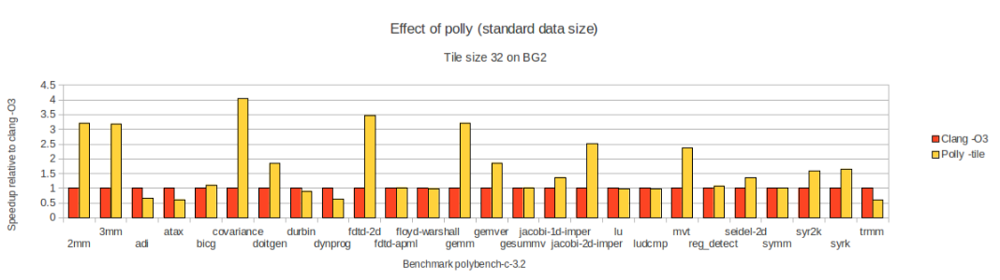
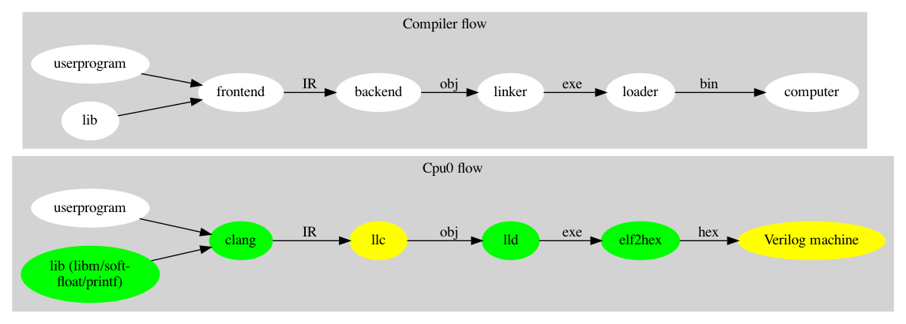

QUALIFICATION
Over 20 years of experience in C/C++ programming, with 13 years focused on compiler

I am a compiler developer with solid experience in LLVM CPU and GPU backends, the LLD linker, NPU/ONNX, C++, OpenGL/GLSL, simulators, and more. I enjoy working on compilers and related technologies.
Over 20 years of experience in C/C++ programming, with 13 years focused on compiler
I’m proud that my work is featured in the official LLVM documentation under http://llvm.org/docs/tutorial/#external-tutorials.
Tutorial: Create an LLVM Backend Compiler
 http://jonathan2251.github.io/lbd/index.html
http://jonathan2251.github.io/lbd/index.html
Tutorial: Create an LLVM Backend Toolchain
 http://jonathan2251.github.io/lbt/index.html
http://jonathan2251.github.io/lbt/index.html
The Concept of a GPU Compiler
 http://jonathan2251.github.io/lbd/gpu.html
http://jonathan2251.github.io/lbd/gpu.html
Master’s Degree, Information Science, National Taiwan Normal University (國立台灣師範大學), Taipei — June 1999
Bachelor’s Degree, Industrial Engineering, National Taiwan University of Science and Technology (國立台灣科技大學), Taipei — June 1994
National Senior Technician Certificate in Information Technology (國家高考資訊技師), Taiwan — 1995
Took a course in image processing and developed Jpeg decoder
Web and javascript: As my resume and my personal web site
Graphivz: as some graph diagrams used in this CV. Source code: mywork_1.gv and study_and_apply.gv
Developed backend compiler for Lightelligence's optical NPU based on RISC-V includes:
1. Built a complete RISC-V compiler toolchain using GCC, LLVM, and QEMU/Gem5 from open-source projects. Evaluated RISC-V vendors and pricing negotiations, leveraging our in-house ability to build the RISC-V toolchain from open source.
2. Led software development for the Aurora hardware product and personally programmed the compiler backend.
3. Developed TaskGraph, integration with TVM and runtime support to enable Deep Learning Graph features on our platform.
Developed GPU code generation for tensor instructions and handling of usharpid.
Optimized GPU performance and fixed related bugs.
Proposed solutions for parallel processing in our CUDA-like language async{...}.
Re-implemented the top two layers of our NPU compiler to support a common graph data structure for ONNX.
Developed compiler input interfaces to support encrypted ONNX models and configuration file formats.
Validated solutions for MLIR support integration.
Scope of GPU Compiler Work:

Compared our GPU compiler code with the ARM-licensed version; approximately 20% of the frontend and 50% of the backend were modified, based on lines of code.
My contributions:
Independently implemented the compiler frontend and LLVM backend for approximately 80% of texture-related APIs, based on the OpenGL ES 3.2 specification, including documentation.
Provided guidance and support to other engineers on the remaining 20% of texture-related APIs, reviewed their code, and collaborated with the texture architecture lead.
Implemented a Prefetch-Sample optimization, allowing 2D texture sampling instructions to be executed by the driver before GLSL shaders are loaded or run.
Developed compiler support for our GPU’s load/store operations in Vulkan, including RGBA fixed-point formats (32, 16, 11, 10, and 2 bits), with handling for NaN and Infinity values. Also authored related documentation.
Developed a semi-automated software system to run benchmarks and generate reports for the GCC toolchain.
Demonstrated the use of Polly, a loop optimization framework, and introduced the concept of the polyhedral optimization model for improving both LLVM and GCC toolchains at Marvell.

Implemented a co-simulator for several of Marvell’s ARM-based 64-bit CPUs.
Proposed and implemented a domain-specific language (DSL) within the co-simulator, significantly reducing the amount of C++ code required for system verification.
Replaced the existing Make-based build system with CMake for the CSim project.
Benefit: CMake offers a simpler and more cross-platform solution compared to Make.
The lower half of diagram below illustrates the workflow of my LLVM backend. The yellow and green sections represent components I implemented, as documented in my tutorials.

Developed the software framework for Set-Top Box systems.